China Employee Termination: Pulse Checkpoint Ladder Brief for Foreign Employers (Hourly Testing Run)
- For foreign employers, China termination execution is safest when managed as a checkpoint ladder: each step must clear before the next opens.
- Most avoidable failure costs still come from step-skipping across legal, HR, manager, and payroll handoffs.
- A checkpoint-ladder format gives leadership a concise pass/fail view that is easy to act on.
- Negotiated exits can reduce conflict, but only when settlement drafting, payroll handling, and communication records stay fully aligned.
- City-level implementation variance remains relevant; local validation should be a required checkpoint, not an optional note.
Step zero: legal context in plain English
China is not an at-will termination market. Employer-initiated termination should follow a lawful route under the Labor Contract Law framework and be executed with coherent evidence and consistent procedure. For foreign teams, the practical sequence is:
- Route legality check.
- Evidence integrity check.
- Communication and settlement alignment check.
- Payroll and local-validation check.
- Closure evidence check.
State Council implementation regulations and SPC labor-dispute interpretation are operationally important because disputes often turn on consistency across these checkpoints.
Pulse checkpoint ladder (pass/fail at each step)
Checkpoint 1 — Route legality pass
Pass condition: one canonical route rationale, consistent across legal/HR/manager notes.
Fail signal: route wording drift or unsupported rationale.
Action: hold progression; reissue route note with owner and timestamp.
Checkpoint 2 — Evidence integrity pass
Pass condition: chronology is coherent, ownership clear, versions controlled.
Fail signal: contradictions, gaps, or unclear source ownership.
Action: freeze employee-facing steps until evidence reconciliation completes.
Checkpoint 3 — Communication alignment pass
Pass condition: approved script version matches planned delivery language.
Fail signal: manager/HR script drift or informal edits.
Action: lock script; require exception approval for deviations.
Checkpoint 4 — Settlement coherence pass
Pass condition: legal settlement terms match payroll mapping and manager explanation.
Fail signal: term mismatch across channels.
Action: enforce single settlement source sheet and cross-functional revalidation.
Checkpoint 5 — Payroll lock readiness pass
Pass condition: all treatment assumptions validated before payroll lock.
Fail signal: unresolved payout logic near lock cutoff.
Action: trigger legal-payroll stop/go gate.
Checkpoint 6 — Local implementation pass
Pass condition: city-level validation completed and documented.
Fail signal: local caveat unresolved.
Action: hold release until local sign-off confirms feasibility.
Checkpoint 7 — Closure integrity pass
Pass condition: payment proof and archive checklist complete.
Fail signal: case marked closed without evidence-complete pack.
Action: block closure state until documentation is complete.
Practical implications for foreign employers
A ladder model improves clarity for non-local decision-makers: either a case cleared a checkpoint or it did not. This avoids ambiguous updates like “mostly ready,” which often create late-stage risk. The model also improves accountability by assigning an owner to each checkpoint and a clear remediation ETA on any fail.
This supports both compliance outcomes and operating predictability. When checkpoints are enforced, teams avoid costly rework around payroll lock, employee communication corrections, and post-signature disputes.
20-minute daily ladder review
Minute 0-4: route + evidence
- Review Checkpoints 1-2 status.
- Stop any case with unresolved fail.
Minute 4-8: communication + settlement
- Validate Checkpoints 3-4.
- Confirm script/source-sheet version integrity.
Minute 8-12: payroll + local
- Confirm Checkpoints 5-6 pre-release.
- Apply stop/go if either fails.
Minute 12-16: closure control
- Review Checkpoint 7 readiness for near-closure cases.
Minute 16-20: leadership readout
- Report only failed checkpoints with owner + ETA + next review time.
SOP by role
HR
- Maintain checkpoint board and owner map.
- Block progression on failed checkpoints.
- Capture communication record logs.
Legal
- Approve route rationale and legal wording.
- Reconfirm settlement language consistency.
- Co-sign high-risk stop/go decisions.
Manager
- Submit fact-based updates with dates.
- Use approved script only.
- Escalate new material facts immediately.
Payroll/Finance
- Validate settlement mapping and treatment assumptions.
- Enforce pre-lock pass conditions.
- Produce payment proof for closure pack.
Compliance/Ops
- Audit checkpoint transitions and reason codes.
- Track repeated fail patterns by city/team.
- Verify closure checklist completeness.
Required document checklist
- Canonical route note
- Evidence chronology log
- Approved script version
- Settlement source sheet
- Payroll treatment mapping
- Local validation memo
- Payment proof + closure archive checklist
SLA baseline:
- route note in 1 business day,
- chronology pass in 2 business days,
- settlement/payroll alignment before lock,
- closure archive within 2 business days after payment.
Exception playbook
Route failure at checkpoint 1
- Stop progression.
- Reassess legal route against current facts.
- Reissue route note before restart.
Evidence failure at checkpoint 2
- Freeze communication plan.
- Resolve ownership/date conflict.
- Resume only after integrity pass.
Settlement challenge at checkpoint 4
- Use documented clarification path.
- Reconcile legal text with payroll mapping.
- Reapprove response language.
Local caveat at checkpoint 6
- Apply release hold.
- Confirm city-level handling.
- Update plan with local validation outcome.
Payroll mismatch at checkpoint 5
- Trigger stop/go gate.
- Correct mapping and revalidate.
- Align employee-facing explanation before release.
System implementation notes
Core fields:
- case_id
- city
- checkpoint_1_to_7_status
- route_status
- evidence_status
- script_status
- settlement_status
- payroll_status
- local_validation_status
- release_status
- unresolved_count
- closure_status
Control rules:
- immutable checkpoint logs,
- mandatory reason codes for fails,
- auto-alert when unresolved_count > 1,
- release lock on failed checkpoints 1-6,
- closure lock on failed checkpoint 7.
Common mistakes and prevention
Mistake: progressing on “partial pass”
Prevention: enforce binary pass/fail at each checkpoint.
Mistake: multiple source documents in circulation
Prevention: single-source policy for route/script/settlement artifacts.
Mistake: reporting progress without control status
Prevention: report fail checkpoint + owner + ETA in every update.
Mistake: local validation treated as optional
Prevention: keep checkpoint 6 mandatory.
Mistake: closure marked before evidence complete
Prevention: require checkpoint 7 pass for closure state change.
What to do now (10 actions)
- Add checkpoint fields to active case tracker.
- Reclassify active cases by pass/fail status.
- Publish canonical route note per case.
- Run chronology reconciliation on failed checkpoint 2 cases.
- Lock script version control.
- Standardize settlement source sheet.
- Apply pre-lock stop/go at checkpoint 5.
- Add local validation owner for checkpoint 6.
- Shift leadership updates to checkpoint-fail format.
- Review weekly fail trends and tune controls.
What to watch next
- Continued dispute sensitivity to evidence/procedure coherence.
- Settlement/payroll mismatch risk near lock windows.
- City-level implementation variation requiring explicit checks.
- Internal urgency cycles increasing step-skipping pressure.
FAQ
1) Is this legal advice?
No. This is an operations governance brief for decision support.
2) Can unilateral termination routes be used?
Potentially yes, where legal/factual conditions support them; evidence quality remains critical.
3) Why include payroll before final legal close?
Because settlement treatment alignment can materially affect risk and employee-relations outcomes.
4) Is mutual termination always lower risk?
No. It helps in many cases but still requires coherent execution.
5) What KPI should leadership start with?
Track full-checkpoint pass rate at release gates: percentage of cases passing checkpoints 1-6 before communication/payroll lock.
Legal appendix (secondary depth)
This run is anchored to the Labor Contract Law, State Council implementation regulations, and SPC labor-dispute interpretation. These sources define route boundaries and dispute-facing standards for evidence and procedure. Practitioner and market/business references are used to translate legal structure into foreign-employer operating controls.
Disclaimer
This content is informational only and does not constitute legal, tax, or employment advice. Employers should seek qualified local counsel and tax advisors for specific cases.
Sources
- National People’s Congress — Labor Contract Law of the PRC (English): http://www.npc.gov.cn/zgrdw/englishnpc/Law/2007-12/13/content_1384064.htm (accessed 2026-03-03).
- State Council — Implementation Regulations of the Labor Contract Law (Decree No. 535): https://www.gov.cn/gongbao/content/2008/content_1124615.htm (accessed 2026-03-03).
- Supreme People’s Court — Interpretation on Application of Law in Labor Dispute Cases (Fa Shi [2020] No. 26): https://www.court.gov.cn/fabu/xiangqing/243981.html (accessed 2026-03-03).
- China Briefing / Dezan Shira — Employee Termination in China (updated 2025-10-17): https://www.china-briefing.com/news/employee-termination-in-china/ (accessed 2026-03-03).
- Littler — Key Recent Developments in China’s Employment Law: https://www.littler.com/news-analysis/asap/key-recent-developments-chinas-employment-law-china-us-comparative-perspective (accessed 2026-03-03).
- PwC Worldwide Tax Summaries — PRC Individual: Taxes on Personal Income: https://taxsummaries.pwc.com/peoples-republic-of-china/individual/taxes-on-personal-income (accessed 2026-03-03).
Need local employment support in China?
If you need a compliance-first partner for hiring, payroll, and risk controls in China, China-Payroll.com can help evaluate the right setup.
Image Prompt Pack
Create a 16:9 hero image for article title: 'China Employee Termination: Pulse Checkpoint Ladder Brief for Foreign Employers (Hourly Testing Run)'. Scene: global operations team evaluating workforce model options for China market entry. Include motifs: decisio…